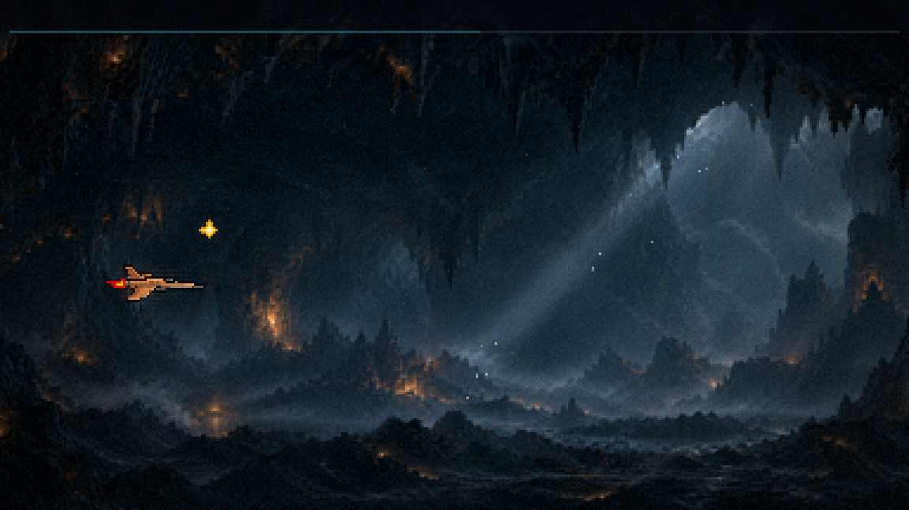
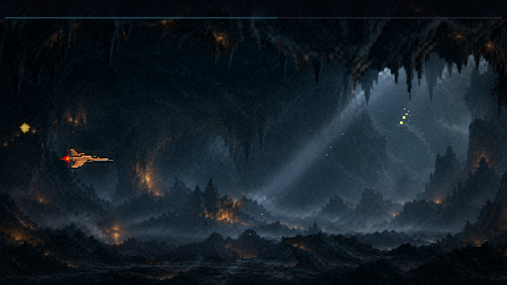
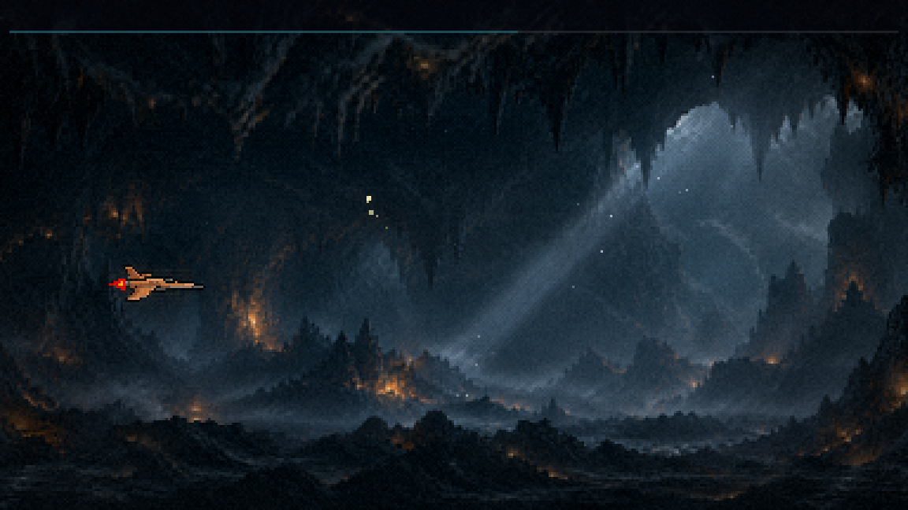
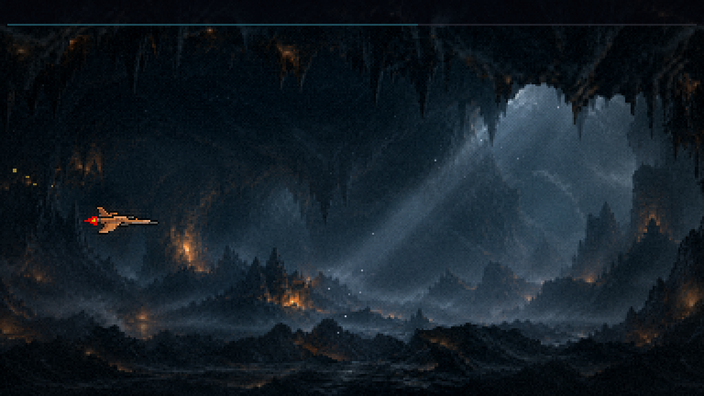
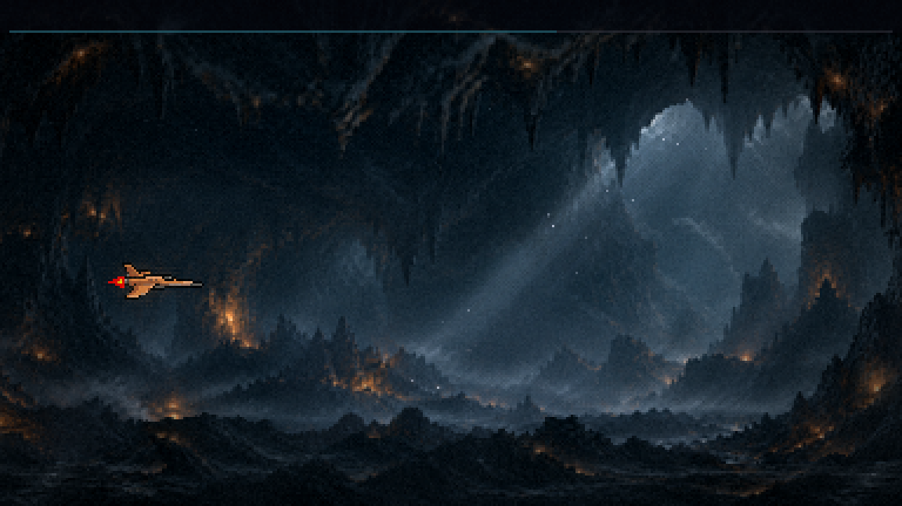
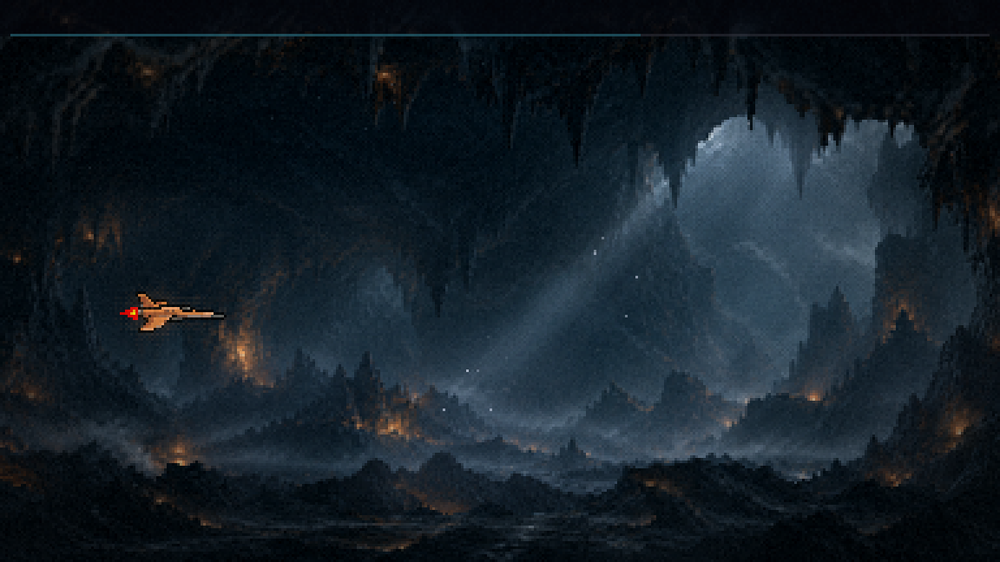
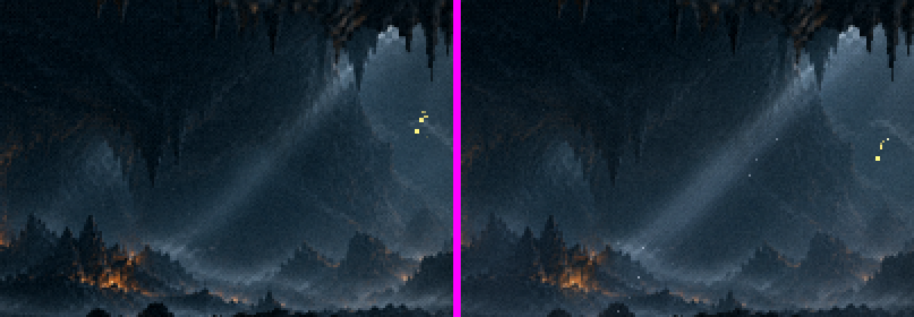
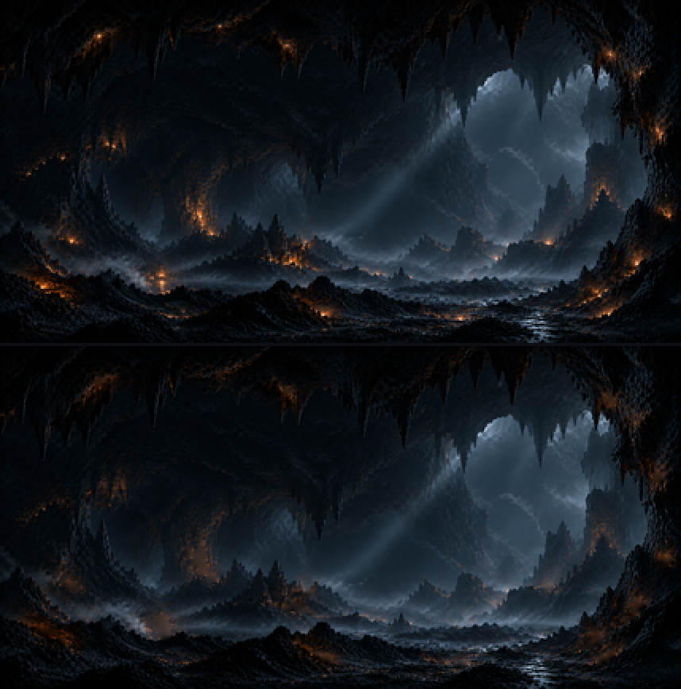
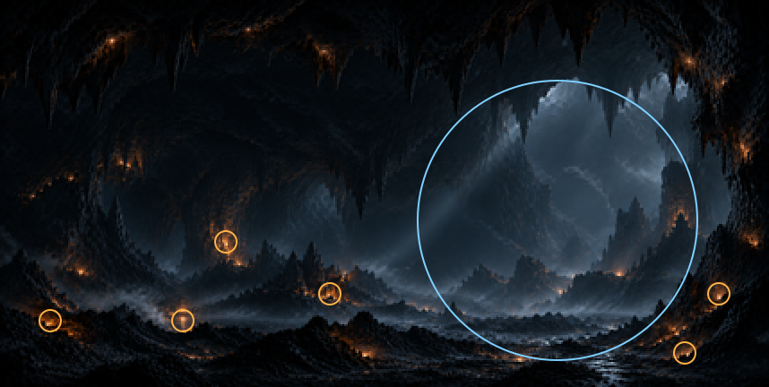

Fase 1 · a caverna · o salão vivo
21/10/2026 · rodada 2: as rochas do salão (recusada) · ← a rocha da frente · A iluminação, as brumas e a névoa no salão, com a mesma técnica do cenário vivo do menu e do exterior da F1. A nave fica parada e intocável, e os inimigos escondidos. Nada commitado.
A passagem, em velocidade real







O que está no jogo
- As brasas tremulam no fundo, no teto e no chão do salão, por terços e nunca juntas, como as do chão de fora. A luz é tirada da própria pintura por difusão, então uma brasa fraca vira a rocha de trás, nunca um buraco preto.
- A bruma em três faixas de velocidades diferentes: uma sobre o salão, uma na névoa pintada do chão e uma na frente do chão, atrás da nave. A diferença de velocidade vende o volume.
- Os fachos frios descem da abertura do alto à direita, no ângulo do facho que você pintou, e respiram devagar. A posição da abertura foi medida na pintura. Ela também tem um halo frio grande.
- Os halos âmbar respiram nas seis brasas mais fortes, cada um no seu fôlego.
- A poeira: grãos de 1 px descendo devagar dentro do facho, acendendo e apagando.
- Por cima de tudo, o tratamento de imagem com o perfil da caverna: a névoa densa na cor do salão e o halo quente das brasas.
- Tudo fica preso ao salão: atrás da rocha e do lado de fora, nada disso aparece.


O que você decide
- A força de cada efeito: a bruma, os fachos, os halos, a poeira. Todos os números estão num lugar só (
SALAO_F1). - A rodada 2: as estalactites e as pontas de rocha como obstáculos, e a cadência de tons.